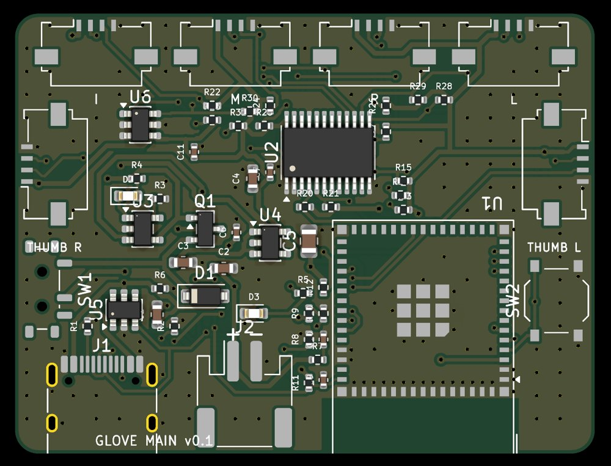

HAND OPTION · BETA
Hand option.
A glove that measures finger bend and spread with a small IMU board on each finger.
Board files, firmware and the app are published together: build one and drive your avatar's fingers.
It is the version we build and use ourselves; accuracy and ease of use are still improving. Read the battery polarity section (4) before building.
01What it does
- Measures the base-joint bend and spread of each finger and the thumb's motion. The middle and end joints are inferred from the base joint the way fingers naturally curl.
- Outputs VMC (tested with MOCAPTYX Stage; Warudo, VSeeFace and others too). VRChat OSC and OpenGloves (SteamVR) are in the app but not yet tested on real setups.
- 200 Hz, to the PC through a USB dongle or Wi-Fi. Two gloves at once, calibrated together if you like.
- Accuracy (our measurements): finger angles hold within about 2-4 deg while the hand turns over or waves.
- Firmware is written from the app with one button, no development tools.
The app's screens are in Japanese for now; this page gives the button names in English with the Japanese label.
02What you need (one hand)
| Part | Qty | Notes |
|---|---|---|
| Main board GLOVE MAIN v0.1 | 1 | On the back of the hand: ESP32-S3, charger, six finger connectors. Can be ordered assembled (3) |
| IMU board GLOVE IMU MINI v0.1 | 6 | Five finger boards (F) and one hand board (H). One panel = 12 boards = both hands (10 F + 2 H) |
| FFC cable | 6 | 1.0 mm pitch, 4 conductors, Type A (stiffeners on the same side at both ends). 100 mm for fingers, 50-60 mm for the hand board |
| LiPo battery | 1 | 1 cell 3.7 V, 300 mAh or more, with protection circuit, JST PH 2.0 mm. Mind the polarity (4) |
| USB dongle | 1 (shared) | A small ESP32-S3 board with native USB, radio-certified for your country; tested with M5Stack AtomS3 Lite. Optional if you use Wi-Fi |
| USB-C cable | 1 | A data cable (charge-only cables will not work) |
| Glove, tape | Anything that holds the boards firmly on the fingers |

Main board (50 x 38 mm). Top edge: I = index, M = middle, R = ring, L = little. Sides: THUMB R / THUMB L, wired in parallel: thumb and hand board may go in either.
The main board uses Espressif's ESP32-S3-MINI-1 module with its own antenna, unmodified (Japan: certification R 201-230385; Espressif lists the module's approvals for other regions). Do not modify the module or antenna or write firmware that changes its radio settings. Use a dongle board certified for your country. Anyone selling gloves or kits takes on the labelling and approval duties (see the licence).
03Ordering the boards (JLCPCB)
The "board files" download holds JLCPCB Gerbers (zip), bills of materials (BOM) and placement files (CPL).
Main board
- 2 layers, 50 x 38 mm, 1.0 mm thick, assembly (PCBA) on the top side.
- Every part has an LCSC part number (ESP32-S3-MINI-1, TCA9548A, MCP73831, ...).
IMU boards (panel)
- Panel 93.0 x 37.6 mm (2 rows of 6), 2 layers, 0.8 mm, "Panel by Customer".
- The sensor (ICM-42670-P) is a Standard PCBA part at JLC, so Economic assembly is not available. HASL is fine.
- All twelve boards share one copper design; the placement file fits R1 on finger boards and R2 on hand boards. Put this in the order remarks:
One design repeated 12 times in a customer panel. R1 or R2 is placed per board as listed in the CPL (boards 1–10: R1, boards 11–12: R2); the unlisted resistor pads stay empty. - Our order: two panels (two pairs of gloves) for about JPY 22,000 with Standard PCBA (October 2026).
JLC may ask whether break-off tabs may go on the connector edge. Ask them to keep the connector edges free.
04Battery (important)
The main board v0.1 battery connector (J2) has pin 1 = +. Most retail LiPo cells (Adafruit convention) are wired the other way, and this board has no reverse-polarity protection: a reversed battery destroys it instantly.
- Choose a JST PH 2.0 cell wired pin 1 = + (red); check the wire order in the product photos or description before buying.
- Find the "+" mark next to J2 on the board. Before plugging in, check that the red wire lands on the "+" side (a multimeter makes it certain).
- If it is reversed, do not plug it in. Until you have a correctly wired cell, run the glove on USB power (everything works).
The next board revision follows the retail convention and adds reverse protection.
05Assembly
- Break off the IMU boards. The back says "F 0x68" (finger) or "H 0x69" (hand). Hold the edges, snap at the tabs and file the stubs. Do not press on the chip (the black square). Mark the H boards on the front too.
- Connect the cables with the blue stiffener up at both ends, then press the black latch down until it clicks. Mount every board component side out: flipping only one end twists the cable and swaps power and ground.
- Connector map: I = index, M = middle, R = ring, L = little. Thumb and hand board H go in THUMB R / THUMB L, either way round (thumb in THUMB R for a right hand and THUMB L for a left hand routes best).
On a left hand the fingers run opposite to I..L, so the cables cross over the board; that is fine. - On the glove: finger boards on the back of each proximal phalanx (between the knuckle and the second joint), the thumb board on the thumb's proximal phalanx, H in the middle of the back of the hand, the main board towards the wrist. Orientation does not matter (calibration measures it). Fix each board in two places and tape the cable near the knuckle: a wobbling board costs accuracy.
06Writing the firmware
- Start HandCapture (unzip the download and run
HandCapture.exe). - Turn the main board's slide switch ON and connect it by USB. When OFF it only charges and does not start.
- When its port appears in the firmware panel (ファーム書き込み), press 手袋に書き込む (write glove firmware). About 15 s; keep USB connected.
- For the dongle board (AtomS3 Lite etc.), press ドングルにする (make dongle) in the same panel.
If writing will not start, hold the board's button (BOOT) while plugging in USB and try again.
07Connecting to the PC
USB dongle (recommended)
With the dongle in the PC, switch the glove on. The glove looks for the dongle when it powers up: if you plugged the dongle in later, switch the glove off and on.
Wi-Fi
Until Wi-Fi is set, the glove opens a set-up network "HandCap-xxxx" (password handcap1). Join it with a phone, open http://192.168.4.1 and enter your 2.4 GHz Wi-Fi. The PC must be on the same network.
The glove then appears in the app. Choose 右 / 左 (right / left) on its card, and in the sensor view move one finger at a time: the same finger's bar should grow.
08Calibration
Press キャリブレーション (calibrate) on the card, or with two gloves 両手まとめてキャリブレーション (calibrate both hands) below the list. About 20 s, following the screen.
- Flat: palm down on the desk, fingers straight and together, still.
- Turn over: keep the fingers straight and together, lift the hand and slowly turn the palm up and back (twice). Fingers bending or wobbling here costs accuracy; redo it if a warning appears.
- Curl: slowly bend and straighten the fingers (twice, thumb too).
- Flat again.
At every start, and whenever it drifts, lay the hand flat and press 合わせ直し (re-zero), or the board's button.
09Output to your avatar
- VMC: set the target in the output tab (e.g.
127.0.0.1:39539). Tested with MOCAPTYX Stage; other VMC receivers such as Warudo and VSeeFace should work. - VRChat OSC (untested): eight gestures (open, fist, peace, ...) as
HandCapGestureL/Rand related parameters. - OpenGloves (untested): finger bend and spread to the OpenGloves SteamVR driver.
- The avatar tab (アバター調整) stores per-avatar bend and spread tuning.
10Troubleshooting
| Symptom | Check |
|---|---|
| The PC does not see the glove on USB | Is the switch ON? Is the cable a data cable? |
| The glove does not appear in the app | Was the dongle plugged in before the glove was switched on? On Wi-Fi: same 2.4 GHz network as the PC? |
| "センサーの値が止まっています" (a sensor is frozen) | Switch off, reseat that board and cable. If it persists the IMU board may be faulty: use a spare. |
| The wrong finger moves | Check the connector map (I, M, R, L) and cables. |
| Fingers spread or drift when the hand turns over | Redo calibration step 2 with straight fingers and a full turn. Are boards and cables fixed firmly? |
| Calibration warns | Redo the step it names, slower and larger. |
When something is off, record a few tens of seconds with ● 録画 (record) on the card and attach it to an issue (saved in app\hand_capture\recordings).
11v0.5 known issues and plans
- Battery connector polarity opposite to retail cells, no reverse protection (4).
- On a left hand the cables cross over the board.
- The thumb is less stable than the other fingers.
- No case yet (in design).
- The app's screens are Japanese only.
- VRChat OSC and OpenGloves output have not been tested on real setups yet. If you try them, please tell us in the issues.
Plans
- Two IMUs per finger (under consideration): a second IMU over the middle phalanx, so hooked fingers are measured rather than inferred. This one-IMU version infers the middle and end joints from the base joint.
- Flexible-PCB version (under consideration): IMUs and wiring on one thin flex circuit along each finger, no cables.
- Next main board: battery polarity and reverse protection, a left-hand connector order, smaller.
- Time-aligning the six IMUs, temperature compensation and other firmware and software accuracy work.
12Downloads and licence
Unzip and run HandCapture.exe; glove and dongle firmware included Board filesHandCapture-0.5.0-hardware.zip
Gerbers, BOM and CPL for the main and IMU boards SourceHandCapture-0.5.0-source.zip
The app's hand part, firmware, board generator scripts
Licence: source-available, not open source. Personal and non-commercial use, modification, building your own, and selling or monetising the motion and works you make are free. Selling gloves, boards or kits, or building the Materials into a product, needs a paid licence (get in touch). See LICENSE.txt in each zip and the licensing policy.
Electronics and lithium batteries can cause fire and injury. You build and use them at your own risk.
Published free of charge: no refunds, replacements, individual support or fixes are promised. Bug reports and ideas are welcome in the issues. Boards and parts you order are between you and the seller.
All company and product names are trademarks or registered trademarks of their owners. MOCAPTYX is not affiliated with or endorsed by them.